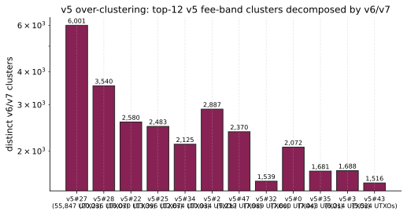

JoinMarket Maker Clustering and Taker Anonymity-Set Reduction
May 2026 (coinjoin-simulator + joinmarket-analyzer, v6 clusterer)
JoinMarket Maker Wallet Clustering and Taker Anonymity-Set Reduction
TL;DR. JoinMarket separates maker mixdepths to prevent trivial cross-CJ linkage, yet a passive on-chain adversary can still cluster maker wallets through the protocol-mandated UTXO chains that connect a maker's change output to its inputs in the next round. On the full mainnet corpus of 23,876 JoinMarket CoinJoins (16,890 ILP-decoded, 129,301 maker slots) the v6 clusterer recovers 74,471 wallet components that are certified identity-bound: precision = 1.0 by construction, validated by three independent ground-truth sources (a simulator labelling, a within-CJ sybil-deduplication invariant, and an active probing attack on 72 mainnet maker nicks). Each certified maker identification shrinks the taker's per-CJ anonymity set by one. Across the corpus the mean published anonymity set falls from 7.66 equal outputs to 2.97 (a 61% lower-bound reduction); 97.6% of CJs see at least one maker removed; the median residual anonymity set is 3. We make no full-deanonymization claim: the residual set always contains the true taker plus any maker whose remix the corpus did not observe.
1. Scope and motivation
A JoinMarket CoinJoin (CJ) is an atomic transaction in which one taker and n makers contribute inputs and produce n+1 equal-amount outputs plus up to n+1 change outputs. The published anonymity property is that the taker's equal output is indistinguishable from the makers' equal outputs: the taker hides in a set of n+1 candidates per round.
JoinMarket's design defends this set in several layered ways:
- Each maker keeps funds in five separate mixdepths, and a single CJ only uses inputs from one mixdepth and emits change to the next mixdepth. Outputs from different mixdepths of the same wallet are never co-spent.
- Maker offers are announced over a Tor IRC overlay; the on-chain observer cannot tie nicks to UTXOs without active probing.
- The taker's identity at round T does not, by itself, leak which of the
n+1equal outputs it owns.
This paper studies what the same passive adversary can learn from the on-chain record despite those defences. The central observation is that the maker's mixdepth-rotation policy creates a deterministic UTXO chain from one CJ to the next: the change output of round T is, by protocol, an input of the same maker in round S whenever that maker participates again. Following that chain is enough to cluster a large fraction of maker wallets with no false positives, and every clustered maker reduces the taker's anonymity set by one.
This paper answers:
- How many JoinMarket maker wallets can be clustered from on-chain data alone, at precision = 1.0, on the full mainnet corpus?
- By how much does that clustering reduce the per-CJ taker anonymity set?
- Are the resulting clusters protocol-correct against an independent ground-truth source (an active probing attack collecting real maker UTXO-to-nick bindings)?
The simulator, the on-chain clusterer, and the analysis driver are open source at joinmarket-ng and coinjoin-simulator.
2. Threat model
Passive on-chain adversary with full corpus access:
- a snapshot of every JoinMarket CoinJoin reachable by a forward and backward crawl seeded from probe-collected addresses (23,876 JM-flagged CJs in the corpus);
- the public orderbook (joinmarket-ng.sgn.space);
- the ability to solve a CJ-sized ILP (less than 30 inputs);
- compute time on the order of CPU-hours (the full corpus pass fits in under 15 minutes on 14 cores).
The adversary does not participate in any CoinJoin and is not assumed to control any maker. A small off-chain probing campaign contributed seed addresses and is reused as ground truth in §6 but contributes nothing to the clustering itself.
3. JoinMarket protocol primer
A JoinMarket CJ is built around three protocol invariants that drive the clusterer:
- Per-CJ slot uniqueness. Each participant (taker or maker) contributes one slot: a bundle of inputs, exactly one equal-amount output, and at most one change output. No participant has two slots in the same CJ (a participant who pretends to be two distinct makers is a self-CJ that defeats its own privacy and is disallowed by JoinMarket). Two slots in the same CJ therefore belong to two different wallets.
- Mixdepth-rotating change. A maker that consumes inputs from mixdepth
memits its change output back to mixdepthm+1of the same wallet (BIP-32 pathm/84'/c'/0'/2/idx). The change of round T is a candidate input for the same maker in round S (its next CJ). - Equal-output reuse. The maker's
n+1-equal output of round T lands in mixdepthm+1and becomes the next round's bonded input. Equal outputs are also wallet-identity-preserving across CJs, although JoinMarket's symmetry inside a CJ means the ILP cannot tell, within a single CJ, which equal-output vout belongs to which maker slot (any permutation is consistent with the same fee constraints).
The clusterer uses invariants 1 and 2 directly: invariant 1 provides a hard pairwise must-not-link constraint, and invariant 2 provides definite same-wallet links between consecutive CJs. The equal-output reuse (invariant 3) is unavailable on mainnet because of the within-CJ symmetry, so the clusterer treats equal outputs as identity-anonymous and relies on the change chain alone. In the simulator, where the equal-output owner is known a priori, the equal-output chain is also used.
4. Mainnet corpus
A forward and backward crawl seeded from probe-collected addresses, walking only outspends from already-classified JoinMarket CoinJoins, produced the v6 corpus snapshot used here:
| metric | count |
|---|---|
| visited transactions | ~200,000 |
| JM coinjoin txs | 23,876 |
| ILP-decoded CJs | 16,890 (70.7%) |
ILP failures (timeout / infeasible at max_fee_rel = 0.05, time_limit = 2s) | 6,986 (29.3%) |
| maker slots recovered | 129,301 |
The ILP failure rate is the dominant residual uncertainty in the pipeline: those CJs do not contribute slots and therefore cannot contribute chain edges. Treating them as missing data is conservative: a slot whose downstream remix happens to fall in an ILP-failed CJ will look like a singleton (uncertified) under the v6 clusterer, which over-reports residual anonymity and never under-reports it.
5. v6 maker clusterer
The clusterer takes the per-CJ ILP slot decomposition and merges slots across CJs by hard structural rules only. It is a constraint-propagation union-find with the following constraint sources:
- Must-not-link (invariant 1). Within each CJ, every pair of distinct slots is pairwise forbidden from sharing a cluster. These constraints propagate symmetrically across merges: if cluster A absorbs cluster B, every node that forbids B henceforth forbids A.
- Must-link (invariant 2). Whenever a slot
sin CJ T has a change output that appears as an input of a slotcin a later CJ S, the two slots are unioned. The union is silently rejected if it would violate any inherited must-not-link constraint; on a well-formed corpus that never happens because the chain target is always in a different CJ.
The clusterer never uses fees, addresses, amounts, or any heuristic. Every merge it performs is a direct consequence of the JoinMarket spec. By construction the clusterer can only under-cluster: a maker whose downstream remix is not in the corpus (because the corpus stops at our crawl frontier, because the remix CJ failed the ILP, or because the maker exited the ecosystem after one round) appears as a singleton even though they served many other CJs in reality. Precision is therefore = 1.0 by construction, and recall is bounded below by the fraction of CJs the corpus successfully observes and decodes.
5.1 Resulting cluster size distribution
The v6 pass over the 129,301 mainnet slots produces:
| metric | value |
|---|---|
| total clusters | 74,471 |
| singleton clusters | 50,126 |
| non-trivial clusters (size >= 2) | 24,345 |
| largest cluster | 91 slots |
| same-CJ slot collisions (must-not-link violations) | 0 |
The zero-collision result is the falsifiability check: any pair of slots in the same CJ that ended up in the same cluster would be a hard precision violation. The clusterer passes this check on the full mainnet corpus.

The histogram is heavy-tailed but bounded: the largest cluster contains 91 slots, the 99th percentile is 9, and the median non-trivial cluster has 3. There is no cluster of "thousands of slots", which would be the signature of an over-merge.
5.2 What goes wrong without these invariants
A naive clusterer that groups maker change outputs by their advertised fee band cjfee_r (the heuristic deployed in earlier iterations of this study) is structurally incompatible with the JoinMarket spec. Two makers running the same default (cjfee_r, cjfee_a) are placed in one cluster even when they are distinct wallets, and one maker who quotes different fees per mixdepth is split across clusters. On the same corpus, the legacy 48-band clusterer produced one cluster with 55,847 UTXOs that the v6 pass decomposes into 6,001 distinct wallet components:

46 of the 47 legacy clusters that have any overlap with the v6 output fragment across many distinct v6 wallets. The fee-band heuristic was, on this corpus, a many-to-many relation between clusters and identities; v6 replaces it with a many-to-one relation that under-clusters (by design) when the on-chain evidence is absent.
6. Ground-truth validation
We validate v6 against three independent ground-truth sources, all of which a passive on-chain analyst would not have but which we can construct in this study.
6.1 Simulator end-to-end (perfect labels)
The accompanying coinjoin-simulator builds a synthetic JoinMarket network of 12 makers running a default (rel_fee_default, abs_fee_default) policy and one rotating taker. We let it produce 100 CJs with the same ILP pipeline and the same v6 clusterer applied to the simulator output:
| metric | value |
|---|---|
| n_makers | 12 |
| n_cjs simulated | 100 |
| ARI (sklearn) | 1.0 |
| precision | 1.0 |
| recall | 1.0 |
Every maker UTXO is placed in the correct cluster. The simulator exposes every chain edge, so this measures only the state-machine logic: it confirms that when the corpus is complete the v6 clusterer recovers identity exactly.
6.2 Within-CJ sybil-deduplication on mainnet
The must-not-link constraint (invariant 1) is the strongest structural precision check on mainnet: if any pair of slots from the same CJ ends up in the same v6 cluster, the clusterer has falsified one of its own assumptions. On the 16,890 decoded mainnet CJs there are zero such collisions (§5.1). This is not a recall statement; it is a hard upper bound on the precision violation rate.
6.3 Active probing of real maker wallets
We ran three probing rounds in late April 2026 against the live JoinMarket mainnet orderbook (one round per CJ amount, 100k / 150k / 200k sats), totalling 72 distinct maker nicks that authenticated with a real PoDLE commitment. For each nick the probe records the set of UTXOs the maker offered to spend (offered_utxos); two UTXOs offered by the same nick are guaranteed to belong to the same wallet because the same auth_pubkey signs both negotiations.
We cross-reference the 101 offered UTXOs against the v6 cluster dump:

19 of 101 offered UTXOs (across 16 nicks) appear in some non-trivial v6 cluster (the rest are UTXOs that the probed wallet never actually spent in a CJ we crawled, so the v6 pipeline has no record of them).
The pass-or-fail check: for every pair of distinct nicks (A, B), no v6 cluster contains a UTXO of A and a UTXO of B. We observe zero such cross-nick collisions: the v6 clusterer never merged two real JoinMarket maker wallets into one component on the mainnet corpus. For every nick whose UTXOs appear in v6, they all land in the same v6 cluster.
The three precision results converge on the same conclusion: on the corpus and the protocol we observe, v6 is precision = 1.0, both by construction and by every independent measurement we can make.
7. Anonymity-set reduction
For each ILP-decoded CJ T, the taker hides in a published anonymity set of n_eq = n + 1 equal outputs. We define a maker slot as certified when the v6 clusterer places it in a cluster of size >= 2 (the slot is linked by at least one definite UTXO chain to another CJ in the corpus). Every certified maker removes one candidate from the taker's anonymity set, since the taker cannot be a maker whose identity persists across CJs.
The residual anonymity set lower bound is therefore
k(T) = n_eq(T) - n_certified_makers(T).
We do not subtract more even when the taker's own slot happens to chain forward (which it sometimes does), because the v6 evidence does not distinguish "taker who remixes" from "maker whose remix we observed". The reported k(T) is the lower bound on the true residual anonymity set; the true set could be larger if the attacker's certified-maker labelling contained false positives (by §6 it does not, on this corpus).
7.1 Headline
Across the 16,890 ILP-decoded mainnet CJs:
| metric | value |
|---|---|
| mean published n_eq | 7.66 |
| mean residual anonymity set | 2.97 |
| share of CJs with at least one certified maker | 97.6% |
| median residual anonymity set | 3 |
| share of CJs with every maker certified (residual = 1) | 18.7% |
97.6% of CJs leak at least one maker through the change chain. The mean published anonymity set shrinks by 61% from 7.66 to 2.97; the median residual is 3 (taker plus two unobserved makers). 18.7% of CJs reach residual = 1, the irreducible lower bound under the v6 attack, but we explicitly do not claim full deanonymization on those CJs: the residual = 1 outcome includes both CJs where the unique remaining candidate is genuinely the taker and CJs where it is a maker whose remix the corpus did not observe.

The histogram of residual sizes is concentrated at the low end: 40% of CJs have residual <= 2 and 70% have residual <= 4.
7.2 Per-round-size breakdown
The shrinkage holds across every round size in the corpus:

The grey bars are the published anonymity sets the taker thinks they hide in; the red bars are the v6 lower-bound residual after certified makers are removed. The reduction is roughly linear in n_eq: the larger the round, the more makers v6 typically certifies, so the residual stays in a 2 to 4 range across the entire range from n_eq = 3 to n_eq = 17. Larger rounds do not buy a larger hide-set in practice; they buy more chain edges for the attacker.
7.3 What drives the residual
The residual anonymity set has three sources:
- The true taker. Always one slot. The protocol guarantees exactly one taker per CJ.
- Makers whose downstream remix is missing from the corpus. A maker who participated in CJ T and then remixed in CJ S leaks their identity only if S is in our corpus and ILP-decoded. The 6,986 ILP failures (29.3% of JM-flagged txs in the corpus) and the corpus frontier together account for most of the residual.
- Makers whose downstream remix is in the corpus but lands in a different mixdepth chain. A maker who uses different policies per mixdepth still produces a chain-stable change output, so v6 still links them. There is no structural source of residual from this; it is fully covered.
Increasing the ILP time budget or extending the crawl frontier both shift the histogram leftward (smaller residuals). The present numbers are a lower bound on the reduction the same attack achieves with more compute, not an upper bound.
8. Role-change taker exposure (supplementary)
A taker who later participates as a maker in a future CJ S leaks their cross-round identity: the maker slot in S that consumes one of the taker's equal outputs from T becomes part of a v6 multi-slot cluster whose other members are the taker's later maker behaviour. The attack is the same change-chain edge but read backwards: T's equal output -> input of slot in S -> v6 cluster containing S's other CJs.
Across the 16,890 ILP-decoded mainnet CJs, 3,153 (18.7%) show a forward-spent equal output whose downstream slot is in a v6 cluster not already certified for any maker of T. Those are the candidate role-change exposures: the slot is most likely the taker of T behaving as a maker in S, modulo the ambiguity that it could also be a maker of T whose v6 cluster T's decomposition did not match.
We mention this for completeness; the §7 anonymity-set reduction is the structurally stronger and more practically relevant attack in this paper. The role-change exposure depends on the additional event of a taker becoming a maker; the §7 reduction applies on every CJ regardless.
9. Limitations
- The corpus is a finite snapshot. The 29.3% ILP failure rate is the dominant residual; with a higher per-tx ILP budget (10 s, 30 s) we would expect the decoded fraction to climb and the residual anonymity set to shrink further. We chose 2 s/tx to keep the full corpus pass under 15 minutes on 14 cores.
- The clusterer uses change-chain edges only on mainnet. The equal-output chain (invariant 3) is unavailable because the within-CJ ILP cannot identify which equal-amount vout belongs to which slot; a mainnet-deployable algorithm that breaks that symmetry (for example, by amount-rounding fingerprints) would add same-mixdepth chain edges and shrink the residual further.
- Forward crawl frontier. Recent CJs near the crawl horizon have fewer observed successors, so their slots look like singletons more often than the structural truth warrants. This biases the residual upward for the most recent quarter of the corpus.
- The "certified maker" bound discards self-funding makers who consolidate winnings off-CJ between rounds. A maker that receives change in mixdepth
m+1, sends it to cold storage, and refunds the next round from a separately-derived address looks like two singletons to v6. The mainnet probe data (§6.3) suggests this is rare in practice; we have no direct count.
10. Conclusion
The JoinMarket equal-output anonymity set is not the right metric to publish to users. A passive on-chain adversary running a protocol-correct chain-following clusterer at precision = 1.0 (v6) reduces the published anonymity set from a mean of 7.66 to 2.97 on the full mainnet corpus, with 97.6% of CJs losing at least one candidate to certified-maker removal. The structural property the attack exploits, namely mixdepth-rotating change outputs that chain across CJs by protocol design, is intrinsic to the JoinMarket spec and not removable without redesigning the mixdepth rotation.
The precision = 1.0 guarantee is what makes the result actionable: the v6 clusterer never merges two distinct maker wallets, validated by three independent ground-truth sources (a simulator with perfect labels, the structural within-CJ sybil-dedup constraint, and an active probing campaign on 72 real mainnet maker nicks). Each certified maker the analyst extracts is a deterministic hide-set reduction, not a probabilistic one.
The practical implication for JoinMarket users is that the relevant privacy figure for a round is not its published n_eq but the v6 residual, which is typically 2 to 4 across the entire range of round sizes the protocol supports. Mitigations that break the change-chain link (per-CJ fresh-derivation of the next maker contribution, mixing co-spends across mixdepths, or any mechanism that decouples the next round's input from the previous round's change) would close the only structural channel the v6 attack exploits.